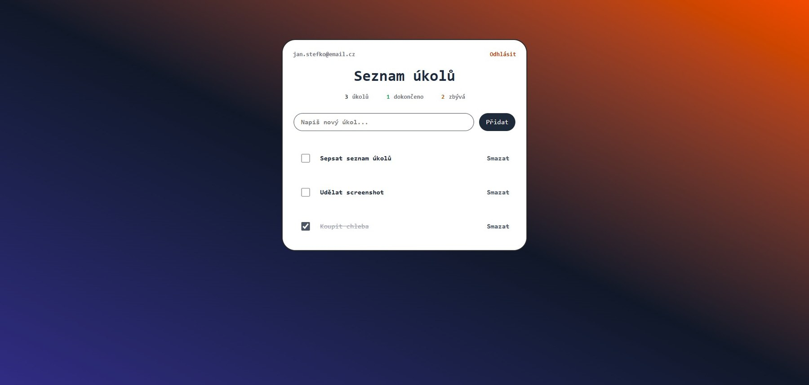
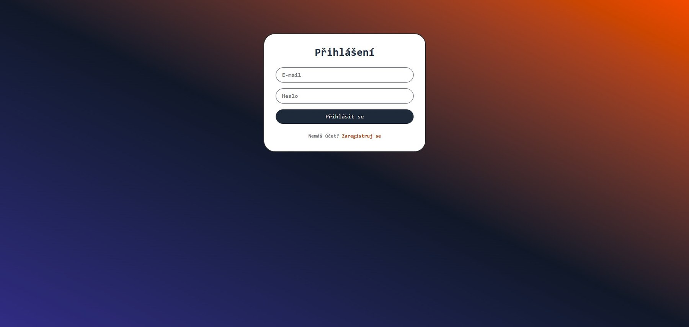

Webová aplikace · 2025
TODO App
Správa úkolů s autentizací uživatelů
Plnohodnotná webová aplikace pro správu úkolů. Registrace, přihlášení, perzistence v MS-SQL databázi. ASP.NET Core MVC s vlastním layoutem, validací a přístupovou logikou. Důraz na čisté UI a srozumitelné stavy.
C# .NET
ASP.NET Core MVC
Entity Framework
MS-SQL
HTML / CSS
Live demo · připravuje se